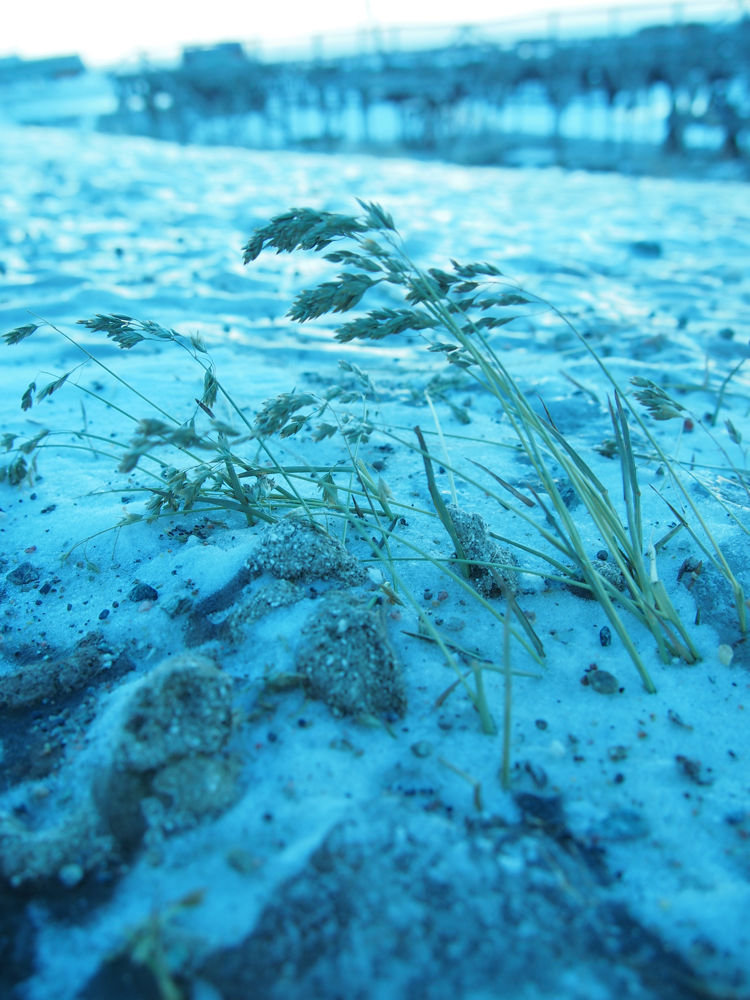

Svalbard is an archipelago of islands in the European Arctic
Svalbard and Spitsbergen are used interchangeably, though officially Svalbard refers to the archipelago and Spitsbergen the largest island
Where is it?
1,000km north of the Norwegian North cape
1/500km south of the North pole
Comprises nine main islands and countless smaller islets
Geology
For most of Earth's history, Svalbard has been submerged, and probably formed close to the south pole
The lack of soil or vegetation makes it a mecca for Geologists, as when not covered by ice, the entire geological range is visible.
Cambrian
Wikipedia
Silurian → Devonian
Google
Jurassic → Cretaceous
Google
Tertiary
Google
Present: West Coast
Jo
Present: East Coast
Jo
Climate
Svalbard is high-arctic with a polar desert climate. This means relatively little precipitation of any kind.
The West coast is warmed by the gulf stream and has a slightly damper, warmer climate than the east, which has a dry steppe-like climate.
Mean temperatures range from -16°C in Winter to +6°C in Summer, but with highs of +21 and lows of -45 not uncommon.
Vegetation
Climate Change
Wildlife
Barry
Jo
Birds
Barry
Insects
Compared to mammals and birds, the insect species of Svalbard are diverse, with over 1000 recorded species. They tend to be concentrated where there is some vegetation and soil, and are found primarily on the warmer west coast. Notable omissions are bee species- flowers rely on flies or self-pollination
Vegetation
Higher plant species are concentrated mainly in the west and the central basin. Despite the steppe-like climate, what groundwater there is can be found in the top soil layers, above the permafrost, so in the summer months quite a few plants grow.
The lack of pollinating insects mean most plants reproduce using suckers. There's virtually no pollen on Svalbard!
Summer
Trees
Grasses

Jo
Flowering Plants
Barry
History
Svalbard has no indigenous population and no evidence of human occupation has been discovered prior to the 16th century.
Having said that, the milder prehistoric climate suggests a pre Stone-Age population is not out of the question and may still be waiting for be discovered. Similarly documentary evidence from the 12th century suggests the Vikings knew of the islands but no definitive evidence has yet been found.
Whaling
Mining
Barry
Svalbard Today
The Svalbard Treaty, signed in 1925 with now over 50 countries as signatories, formalises the legal status of the archipelago as Norwegian territory.
Permanent military installations are strictly forbidden. The only taxes that can be claimed are those that go towards the administration of the archipelago, and all citizens of all treaty nations must be treated equally
Jo
Barry
Barry
Barry
Final thoughts
Svalbard is really, really cold in the Winter!
The polar bear risk limits what independent travelling you can do.
Having said that, as a place to visit the high arctic, it's pretty easy to get to, and definitely worth a short trip.
 Jo
Jo